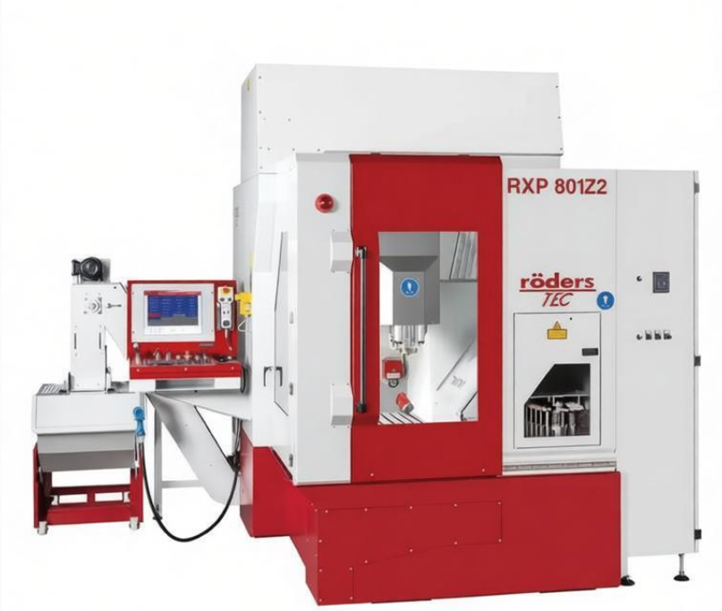
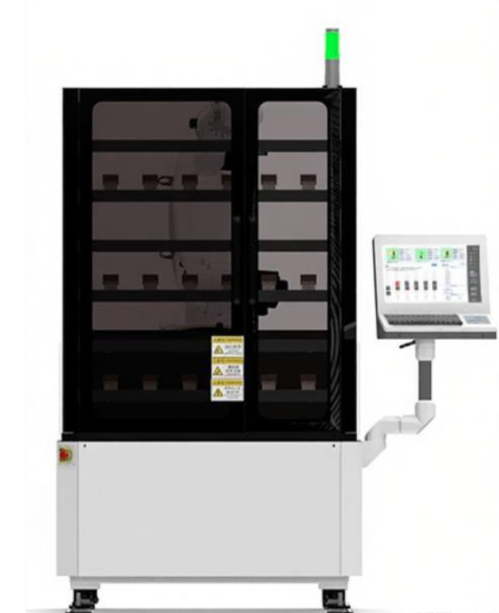
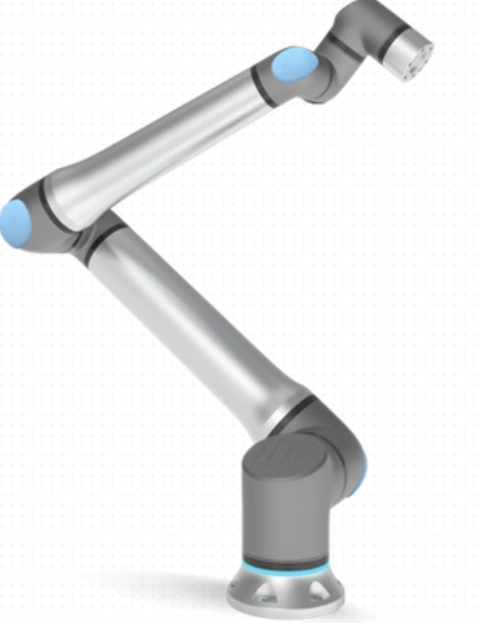

📋 实时日志
| 时间 | 日志内容 | 类型 |
|---|

状态：正常

状态：自动

状态：正常
加工零件名称
示例零件 A
加工时长
00:00:00
当天已加工数
0
未加工数
0
| 序号 | 加工零件监控编号 | 加工零件名称 | 工装编号 | 模号 | 加工机台名称 |
|---|
禁用
无料
加工中
待加工
加工完成
待扫描
错误
禁用
无料
加工中
待加工
加工完成
错误
禁用
无料
加工中
待加工
加工完成
待扫描
错误
急件
禁用
无料
加工中
待加工
加工完成
错误
| 序号 | 时间 | 日志类型 | 内容 |
|---|
线体配置
夹爪系统
料架配置
机床配置
PLC信号配置
机器人信号
随行台信号
预设台信号
工件旋转台信号
清洁站信号
系统工作流定义
工作流步骤
| 序号 | 流程名称 | 是否执行 | 优先级 | 操作 |
|---|
按列表顺序作为默认执行顺序；优先级数值越大越优先（同优先级内按序号执行）。勾选“是否执行”才会纳入工作流。